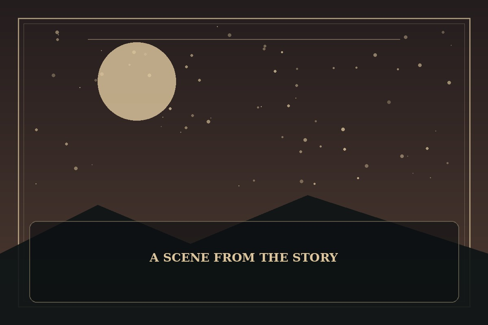

Sweet Home
Synopsis
When a city descends into a terrifying crisis, a group of residents must shelter together while confronting the fear and selfishness inside themselves. Survival depends on more than barricades.
Chapter 1: The Lights on the Ninth Floor
The power failed at 9:17 p.m. In the apartment hallway, emergency lights painted every face a sickly red, and something scraped slowly against the stairwell door. No one knew whether the sound came from outside or from someone hiding nearby.
Mira gathered the residents in the laundry room and asked each person to share what they had: water, medicine, batteries, or useful skills. Arguments broke out immediately. A man refused to surrender his food, while a child quietly offered the last flashlight in her backpack.
When the scraping returned, they worked together to reinforce the door and guide an injured neighbor to safety. Fear did not disappear, and no one suddenly became brave. But the hallway was no longer filled with strangers waiting for someone else to act; it was filled with people keeping watch for one another.

This fan-made sample is an original piece created for a student website project; it is not an official chapter of Sweet Home.